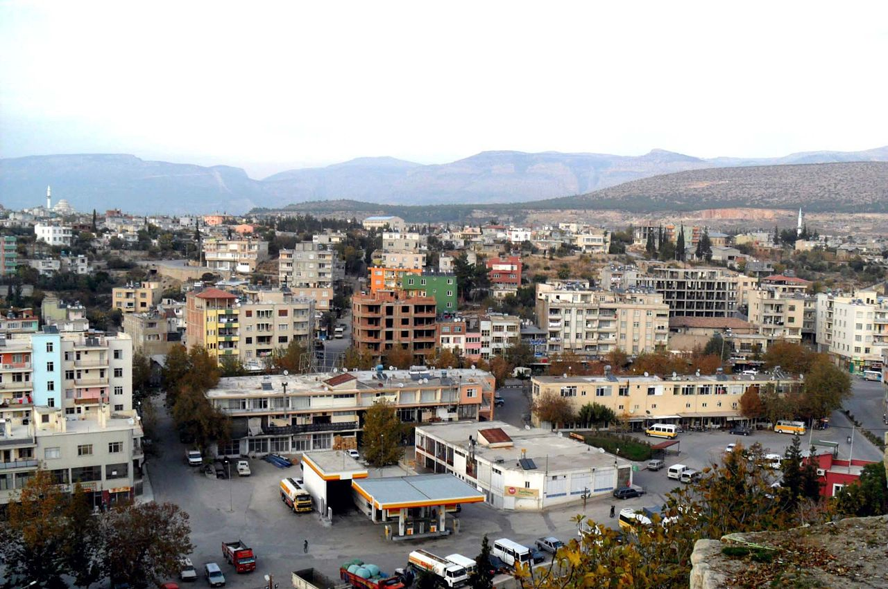

-MERSİN MUT-
Mut, Akdeniz Bölgesi'nde, Mersin İli'ne bağlı bir ilçedir. Toros Dağları eteklerinde, Göksu Nehri kıyılarında kurulmuştur.Doğusunda Silifke, batısında Ermenek, kuzeyinde Karaman ve güneyinde Gülnar topraklarıyla çevrilidir.
İlçenin toplam alanı 2860 km² dir. Kozlar ve Sertavul yaylaları ile Çınaraltı ve Karaekşi Millî Parkları'nın yanı sıra UNESCO Dünya Miras Listesi'ne aday gösterilen Alahan Manastırı mevcuttur.
Mut'ta MÖ 2000 yıllarında ilk yerleşimlerin başladığı tahmin edilmektedir. Dağlık ve Ovalık Kilikya olarak iki bölüme ayrılan Kilikya'nın Dağlık bölümünde, tarihte çok önemli olaylara sahne olmuş Sertavul geçidinin hemen güney ağzında kurulmuştur.Denizden ortalama yukseltisi 250-350metre civarindadir. Bir süre Venedikli ve Kilikyalı korsanlar tarafından elden ele geçtiği, sonrasında Roma hükümetince burada uzun süreli bir hakimiyet sağlandığı söylenir. Bu dönemde kentin adı Claudiopolis'ti.Mut ve çevresindeki Toros Dağlarının M.S. 700-800 yıllarından itibaren Kafkaslardan Hazar Bölgesinden gelen Türk Kabileleri Taifelerine sonradan da Orta Asyadan ve İran'da kopup gelen Türkmenler'e de ev sahipliği yaptığı bilinir. Yörük Göçebe Oymakları son 300 yıl içinde Çukurova, Adana, Mersin ve Akdeniz Bölgesinden Bölgeye gelmiştir, az sayıda yerleşmiş ve çoğunluk olarak bugünkü Ege Bölgesine göç etmeye devam etmişlerdir. Ancak tarihte bölgede kurulan ve Güneydoğu Anadolu bölgesindeki çoğu ili de kapsayacak şekilde hakimiyetini sürdüren Kilikya Ermeni Prensliği'nin de 1375 yılına kadar varlığını devam ettirdiği bilinmektedir. Hâtta Toros Dağlarının adının bu prensliğin başında bulunman Thoros isimli prenslerden geldiği de ileri sürülür.Ama bu yanlıştır.
Selçuklu Sultanı I. Alaeddin Keykubad zamanında Karamanoğulları beyliğinin kurucusu olan Nur-e Sofi Bey, bölgeden Ermenileri 1228 yılında kovarak Ermenek, Mut, Gülnar ve daha sonra da Silifke'yi hakimiyeti altına almıştır. Bölgenin Karamanoğlu beyliğinin eline geçmesinden sonra, Karamanoğulları Mut ve çevresini mamur etmişlerdir. Karamanoğlu Mesut Bey zamanında Mut, 5 sene Beyliğe başkentlik yapmıştır. La'al Paşa Camii, Kızılminare ve bazı başka yapıların Karamanoğulları zamanında yapıldığı bilinmektedir.
1483 yılı yazında Kasım Bey yanında üç oğlu, otuz yiğit beyi ile Kestel (Dağpazarı) yaylasına gelir. Koyunlar kesilir, kavurmalar, pilavlar, helvalar pişirilir, şerbetler ezilir. Bu ziyafet sırasında Hocantı Oğlu zehiri gizlice şerbete katar. Şerbeti içenler Kasım Bey'le beraber otuz dört kişi birden ölürler. (1483) Kasım Bey'den sonra Karamanlılar' ın bazı çırpınışları oldu ise de devlet olabilme özelliği taşımıyor. 1502 Yılından sonra Karamanlılar'ın topluca doğuya (İran'a) göçmeleriyle Karaman toprakları da tamamen Osmanlılar eline geçer. 1500-1555 Yılları arasında Mut Kazası, Mut, Silifke ve Sarıkavak nahiyelerinden oluşurken 1555 yılında Silifke'nin ayrılmasıyla küçülmüştür.
